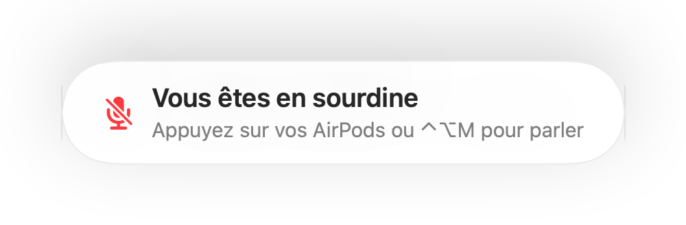

Un rappel « Vous êtes en sourdine » pour chaque app d'appel
Zoom vous avertit quand vous parlez en sourdine. La plupart des autres apps ne le font pas, et les appels sur le Web presque jamais. Vous expliquez quelque chose pendant une minute avant de vous apercevoir que tout le monde attend.
Muffle détecte la parole quand votre micro est coupé et affiche un rappel, dans n'importe quelle app. Lorsque l'appel utilise des AirPods ou un casque, il écoute le micro intégré de votre Mac, uniquement pour en mesurer le volume. Rien n'est enregistré.
Essayer Muffle gratuitement pendant 3 joursBientôt disponible sur le Mac App Store
Activer le rappel
- Installez Muffle et autorisez l'accès au micro.
- Vérifiez que l'option « Me rappeler si je parle en sourdine » est activée dans les Réglages de Muffle.
- Rejoignez un appel avec des AirPods ou un casque et coupez le micro.
- Commencez à parler. Un rappel « Vous êtes en sourdine » apparaît.

- Vous rejoignez un appel alors que le micro était resté coupé lors du précédent ? Muffle vous le rappelle dès le début de la réunion.
- Le bruit du clavier ne déclenche pas le rappel. Seule une prise de parole continue le fait.
Questions fréquentes
Le rappel fonctionne-t-il avec le micro intégré du Mac ?
Il fonctionne lorsque l'appel utilise des AirPods ou un casque. Si l'appel utilise le micro intégré du Mac, ce micro est coupé et ne peut pas vous entendre.
Mon audio est-il enregistré ?
Non. Muffle mesure uniquement le niveau sonore et ne conserve ni ne transmet jamais aucun son.